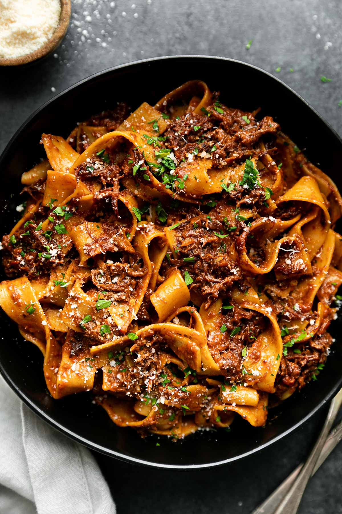

Short Rib Ragu
An Italian meat-based sauce that’s typically made with veal, beef, lamb, pork, fish or poultry
AMAZING on gnocchi, pasta, polenta, rice, potatoes, and more
It’s a little short-cut-y, a little weeknight-friendly, and MEGA DELICIOUS.
Section 1: Ingredients
- 2 lbs bone-in short ribs
- 1 tablespoon vegetable oil
- 1 small onion, finely diced/li>
- 2 cloves garlic, chopped
- 1/4 cup dry red wine
- 1 jar store bought marinara/spaghetti sauce (25-oz)
- 1/2 cup water
- 1/2 teaspoon salt
- 1/4 teaspoon crushed red pepper
- salt & pepper, to taste
- 1 lb. pasta or gnocchi
Section 2: Instructions
- Turn instant pot on to the sauté setting. While it heats up, trim any excess fat from the short ribs, then pat dry with a paper towel. Generously season the meat with salt and pepper.
- Add oil to the Instant Pot. Add the short ribs to the hot oil and sear on all sides until brown. (The meat does not need to be fully cooked. Just browned.) Remove from pot and set aside.
- Use tongs & paper towel to remove any excess oil from the pot. Add onion and garlic and sauté until tender, about 3 minutes, scraping the browned bits off the bottom of the pot. Pour wine in to deglaze (*sizzzles*) and cook for about 2 minutes.
- Add short ribs, tomato sauce, salt and crushed red pepper to pot. Use 1/2 cup water to rinse out sauce jar and add to pot. Set Instant Pot to the stew/meat setting (35 mins). When it’s done, let it sit untouched for a natural steam release.
- Remove meat to sheet pan. Shred into bite size pieces, removing bones and any large pieces of fat. Meanwhile, set the Instant Pot to sauté again to reduce/thicken the sauce. Skim any fat off top of sauce and add meat back in. Taste and add salt & pepper if needed.
- Serve over cooked pasta or gnocchi. Yummo!
NOTES:
- Slow Cooker Instructions: Do steps 1-3 in a pan on the stove, and cook everything in the slow cooker on low for 8 hours.
- Stovetop Instructions: Heat the oil in a Dutch oven over medium heat. Sear the short ribs on all sides until browned, but not cooked through. Remove from pot. Add in the onion and garlic and sauté for about 3 minutes until tender. Pour in the wine to deglaze the pan and scrape up the brown bits. Add in the short ribs, tomato sauce, salt, and crushed red pepper. Use 1 cup of water to rinse out the jar and add to pot (1/2 cup more than original recipe states). Bring everything to a boil. Then reduce to a simmer, cover the pot, and cook on low for 2 hours until the beef is fork tender.
- Initially, the meat will stick to the stainless surface of the Instant Pot, but once it’s got a nice sear on it, it should release pretty easily.